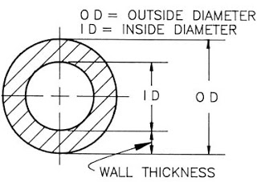
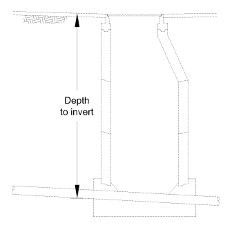
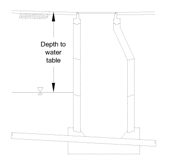

Design Condition {% if error %}{% if error["design_condition"] %} {% else %} {% endif %}{% else %} {% endif %}
Location {% if error %}{% if error["location"] %} {% else %} {% endif %}{% else %} {% endif %} Pipe Location Use this option to apply standard AASHTO HS-20 Highway, Cooper E-80 railroad, or 180 kip airplane gear assembly live loads. The values of the live load pressures are calculated with respect to depth and include an impact factor of 1.5 to account for bumps and irregularities in the travelled surface. See American Lifelines Alliance for additional details.
Host Pipe Diameter {% if error %}{% if error["host_diameter"] %} {% else %}{% if warning %}{% if warning["host_diameter"] %} {% else %} {% endif %}{% else %} {% endif %}{% endif %}{% else %}{% if warning %}{% if warning["host_diameter"] %} {% else %} {% endif %}{% else %} {% endif %}{% endif %}

Depth to Invert {% if error %}{% if error["surface_to_invert"] %} {% else %}{% if warning %}{% if warning["surface_to_invert"] %} {% else %} {% endif %}{% else %} {% endif %}{% endif %}{% else %}{% if warning %}{% if warning["surface_to_invert"] %} {% else %} {% endif %}{% else %} {% endif %}{% endif %}

Groundwater Depth {% if error %}{% if error["gw_level"] %} {% else %}{% if warning %}{% if warning["gw_level"] %} {% else %} {% endif %}{% else %} {% endif %}{% endif %}{% else %}{% if warning %}{% if warning["gw_level"] %} {% else %} {% endif %}{% else %} {% endif %}{% endif %}

• {{ value[0] }}
Elasticity Modulus {% if error %}{% if error["design_modulus"] %} {% else %}{% if warning %}{% if warning["design_modulus"] %} {% else %} {% endif %}{% else %} {% endif %}{% endif %}{% else %}{% if warning %}{% if warning["design_modulus"] %} {% else %} {% endif %}{% else %} {% endif %}{% endif %}
Flexural Strength {% if error %}{% if error["design_flexural_strength"] %} {% else %}{% if warning %}{% if warning["design_flexural_strength"] %} {% else %} {% endif %}{% else %} {% endif %}{% endif %}{% else %}{% if warning %}{% if warning["design_flexural_strength"] %} {% else %} {% endif %}{% else %} {% endif %}{% endif %}
Safety Factor {% if error %}{% if error["safety_factor"] %} {% else %}{% if warning %}{% if warning["safety_factor"] %} {% else %} {% endif %}{% else %} {% endif %}{% endif %}{% else %}{% if warning %}{% if warning["safety_factor"] %} {% else %} {% endif %}{% else %} {% endif %}{% endif %}
Retention Factor {% if error %}{% if error["ret_factor"] %} {% else %}{% if warning %}{% if warning["ret_factor"] %} {% else %} {% endif %}{% else %} {% endif %}{% endif %}{% else %}{% if warning %}{% if warning["ret_factor"] %} {% else %} {% endif %}{% else %} {% endif %}{% endif %}
Ovality {% if error %}{% if error["ovality"] %} {% else %}{% if warning %}{% if warning["ovality"] %} {% else %} {% endif %}{% else %} {% endif %}{% endif %}{% else %}{% if warning %}{% if warning["ovality"] %} {% else %} {% endif %}{% else %} {% endif %}{% endif %}
Enhancement Factor {% if error %}{% if error["enhancement_factor"] %} {% else %}{% if warning %}{% if warning["enhancement_factor"] %} {% else %} {% endif %}{% else %} {% endif %}{% endif %}{% else %}{% if warning %}{% if warning["enhancement_factor"] %} {% else %} {% endif %}{% else %} {% endif %}{% endif %}
Soil Density {% if error %}{% if error["soil_density"] %} {% else %}{% if warning %}{% if warning["soil_density"] %} {% else %} {% endif %}{% else %} {% endif %}{% endif %}{% else %}{% if warning %}{% if warning["soil_density"] %} {% else %} {% endif %}{% else %} {% endif %}{% endif %}
Poisson's Ratio {% if error %}{% if error["poissons"] %} {% else %}{% if warning %}{% if warning["poissons"] %} {% else %} {% endif %}{% else %} {% endif %}{% endif %}{% else %}{% if warning %}{% if warning["poissons"] %} {% else %} {% endif %}{% else %} {% endif %}{% endif %}
Soil Modulus {% if error %}{% if error["soil_mod"] %} {% else %}{% if warning %}{% if warning["soil_mod"] %} {% else %} {% endif %}{% else %} {% endif %}{% endif %}{% else %}{% if warning %}{% if warning["soil_mod"] %} {% else %} {% endif %}{% else %} {% endif %}{% endif %}
Host 'n' {% if error %}{% if error["n_host"] %} {% else %}{% if warning %}{% if warning["n_host"] %} {% else %} {% endif %}{% else %} {% endif %}{% endif %}{% else %}{% if warning %}{% if warning["n_host"] %} {% else %} {% endif %}{% else %} {% endif %}{% endif %}
Liner 'n' {% if error %}{% if error["n_liner"] %} {% else %}{% if warning %}{% if warning["n_liner"] %} {% else %} {% endif %}{% else %} {% endif %}{% endif %}{% else %}{% if warning %}{% if warning["n_liner"] %} {% else %} {% endif %}{% else %} {% endif %}{% endif %}
Host Pipe Age {% if error %}{% if error["host_age"] %} {% else %}{% if warning %}{% if warning["host_age"] %} {% else %} {% endif %}{% else %} {% endif %}{% endif %}{% else %}{% if warning %}{% if warning["host_age"] %} {% else %} {% endif %}{% else %} {% endif %}{% endif %}
Information provided is for estimation purposes only.
Visit me on Github!